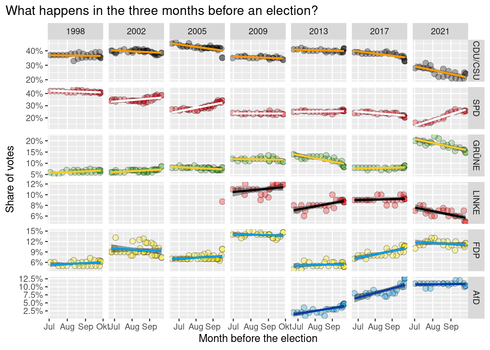
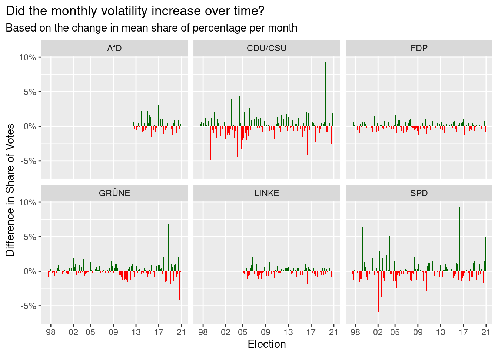
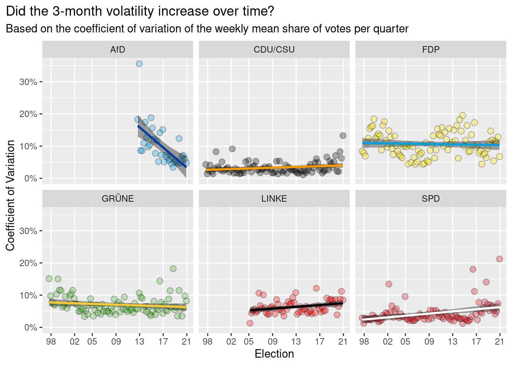

Did German Voters Become More Impulsive?
We try to find out if voters in Germany became more impulsive over time.
A bit more than two weeks ago, Germany held a federal election and, naturally, this is always reason for a lot of discussions and subjective truths. One subjective truth I encountered myself related to how fast the party CDU/CSU was able to collect and lose votes according to polls right before the election.
According to the Allensbach Institute, a private polling institute based in Allensbach, Baden-Württemberg, on July 20th, approximately three months before the official election, the CDU/CSU could get 31.5% of the votes1. Almost four weeks later on the 19th of August, the Allensbach institute forecast only 27.5% for the CDU/CSU.
At that time, I had the subjective feeling that it was quite common to assume that the CDU/CSU is on a steep downward spiral. In the end, the CDU/CSU was able to slow its downward course and got 24.1% of the votes in the election. While this is still an abysmal outcome for this party, I was surprised that it was not worse.
A “similar” surprising tale can be told for other parties too. For instance, the party SPD was gaining a lot of steam in the last three months of the election campaign and the party DIE GRÜNE, once surprisingly popular during the election, lost a lot of votes towards the end as well.
All of these ups and downs left a feeling of rapid change for some. For example, last weekend I had an interesting discussion about whether voters no longer cast their votes according to “belief” but are much more influenced by the spur of the moment and flip-flop back and forth between parties depending on who is making the headlines at that time. Consequently, I decided that this might be something worth looking at with data.
Thus, this blog post tries to look at historic data from election polls to see if this year’s change before the election is indeed something unprecedented. If this is so, then that might support that voters become more impulsive. So, this is why I scraped election polls2 since 1998 from the Allensbach institute and the Kantar (Emnid) institute whose election polls can be found publicly here3.
Data Warning
I believe it is worth pointing out that the polling results will have to be taken with a grain of salt. Especially the fact that people might judge their current preference differently in non-election years compared to election years has to be taken into account. Obviously, I suspect that the polling institutes considered this as part of their forecast but nevertheless it cannot hurt to mention potential caveats.
Popularity Over Time
This being said, let’s take a look at the six (currently) largest parties and their popularity over time. Here, I will only look at the data from the Allensbach institute as these are already quite a lot of data points and the picture might get messy otherwise. As this is an election-focused blog post, I took the liberty of labeling only the election years on the x-axis4.

Some recent trends are detectable but in this particular figure, I don’t see anything that points to an increased volatility in recent times.
What Happens Close to an Election?
Instead of looking at the overall fluctuations, we could look at the last three months before an election. Since an election takes places in September, in the next plot I have depicted only the polling results in the months July, August and September in an election year. To make trends more visible, I have added a regression line for each party and each election.

Interestingly, the most recent election seems to have had more volatile last three months compared to previous elections. Indeed, this could indicate more impulsive voteing behavior but I am not entirely convinced yet.
Three-Month Volatility
To see if the change in the last three months of the most recent election is truly something out of the ordinary, we need context. In order to get this context, let us consult our historical data again and compute the average share of votes for each party in every quarter of every year. Then, hopefully, these computed mean percentages represent the mood of the majority of people in a given quarter and we can see how much these means change from quarter to quarter.

Taking the fluctuations over time into account, the quarterly change right before this year’s election looks less extreme. In fact, most of the parties have had more extreme or similar changes on a quarterly basis in the past.
Clearly, the fact that we aggregate the share of votes over a period of three months could potentially obscure fluctuations. But as the next plot shows, if we do the same thing but aggregate on a monthly basis, then the overall impression of the new monthly plot is the same as with the original quarterly plot.

Coefficient of Variation
Before we try to make sense of what all that we have seen could mean in terms of voters’ impulsiveness, let us take one more stab at trying to measure the volatility. This time, let us compute the coefficient of variation (CV)5 of the mean weekly share of votes for each quarter and each party and display this over time.

Except for the AfD and SPD, no profound trend in the CV can be detected as most regression lines appear to have a slope that is close to zero. Further, the AfD’s decrease in its monthly CV might be explained by the fact that it is a comparatively new party which means that might not have had a solid voter base in the beginning.
Since we are interested in more recent voter behavior, let us try to take only the data since the beginning of 2013 into account. This should give us an impression about the three most recent elections.

Overall, as the confidence bands of the regression lines indicate that the real slope of the lines might as well be close to zero, I find it hard to argue either way about a more impulsive voting behavior.
Conclusion
So, we have observed something odd here. In previous elections, a party’s changes in popularity in the last three months were not as profound as the last quarter’s changes that we witnessed this year. Overall, however, the degree of how much changed right before the election is nothing that could not be witnessed in the past at other non-election times.
If I had to guess, I would say that this might indicate that over the last 20 years, people’s willingness to vote for a different party remained somewhat similar. But it appears like the moment, when voters eventually decide for a party, has been moved closer to the election itself. Thus, one might argue that it has become harder to pinpoint which party one feels most connected to and this leads to an indecision right until the end. This indecision could indeed lead to a flipping back and forth between two or three parties one feels similarly connected to. But this, I would argue, is a sign of people lacking a strong connection to one single party and not one of impulsiveness.
What do you think? Is there more that we can extract from this kind of data? As I am quite new to this type of analysis, I am always glad about suggestions about how to improve. If you want to share your ideas, feel free to send me an e-mail or leave a message in the comment section. As always, if you liked this blog post, I would appreciate a hit on the applause button below.
Footnotes
The data from the Allensbach institute can be found online here.↩︎
The resulting data can be found here and the script I used to extract the data is here↩︎
There are a couple of more polling institutes available online but I decided to not scrape all of their results to save time.↩︎
For better legibility, I have tried to use the colors the parties are usually associated with. In some instances, using only one (primary) color resulted in a hard to read plot. Thus, whenever possible, I have consulted online party guidelines to find colors they use in their own publications.↩︎
This quantity is defined as the sample standard deviation divided by the sample mean. See also Wikipedia.↩︎